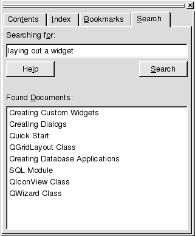

| Home | All Classes | Main Classes | Annotated | Grouped Classes | Functions |
[Prev: Qt Assistant in More Detail] [Home] [Next: Customizing Qt Assistant]

Qt Assistant provides a powerful full text search engine. To search for certain words or text, click the 'Search' tab in the sidebar. Then enter the text you want to look for and press Enter or click Search. The search is not case sensitive, so Foo, fOo and FOO are all treated as the same. The following are examples of common search patterns:
deep -- lists all the documents that contain the word 'deep'
deep* -- lists all the documents that contain a word beginning with 'deep'
deep copy -- lists all documents that contain both 'deep' and 'copy'
"deep copy" -- list all documents that contain the phrase 'deep copy'
The wildcard (*) character cannot be used within quotes.
The list of documents found is ordered according to the number of occurrences of the search text they contain, therefore those with the highest number of occurrences appearing first. Simply click any document in the list to display it in the document window.
If the documentation has changed, i.e. if documents have been added or removed, Qt Assistant will reindex.
[Prev: Qt Assistant in More Detail] [Home] [Next: Customizing Qt Assistant]
| Copyright © 2007 Trolltech | Trademarks | Qt 3.3.8
|